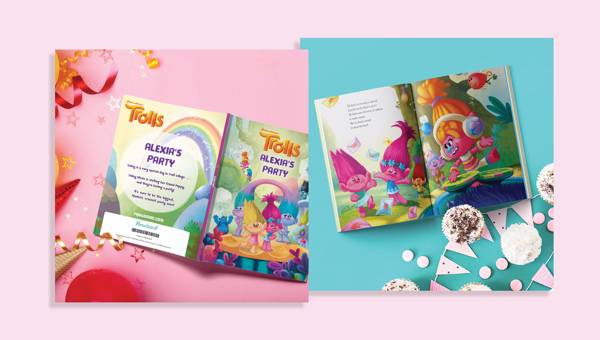

Since September 2018, I've served as Penwizard's sole visual designer. As part of a small and fairly new business, my role has included everything from developing a flexible branding system to rolling out seasonal campaigns and book launches to improving UI and UX on Penwizard's website.
BRAND DEVELOPMENT
Since there had never been a designer at Penwizard before me, there was no identity to speak of when I started aside from a logo and a single shade of teal. I developed a flexible color scheme, type system, and other rules to dictate the look and feel of the company’s website, emails, internal materials, and evergreen marketing.
SEASONAL CAMPAIGNS
As an ecommerce company focused on gifting for early readers, a crucial part of Penwizard’s business model is marketing for holidays such as Mother’s and Father’s Day, Christmas, Easter, and Valentine’s Day. Seasonal creative includes social media posts and stories, Mailchimp email campaigns, web banners, Facebook and Google ads, and more.
LICENSED BRAND CAMPAIGNS
Many of Penwizard’s featured offerings are books from beloved children’s brands such as LEGO, Peppa Pig, PAW Patrol, and The Snowman. Promoting these titles requires careful adherence to each parent company’s brand guidelines. One of my central responsibilities is working closely with these brand partners to make sure both sides approve of creative and marketing goals have been met or surpassed.
